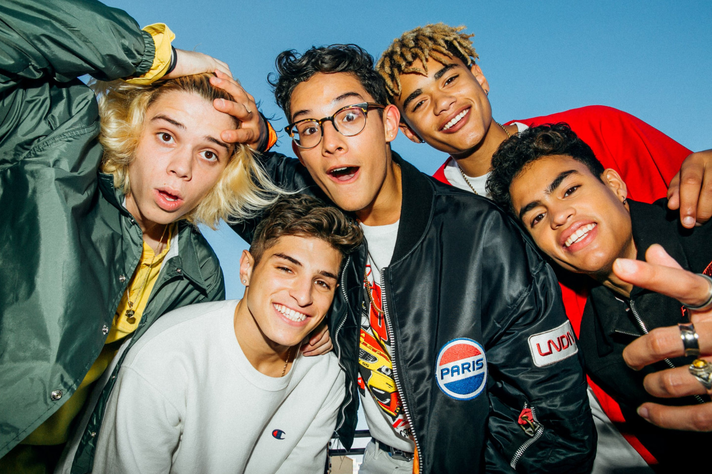

My Favorite Band PRETTYMUCH
The members of PRETTYMUCH were pursuing solo careers until Simon Cowell and Sonny Takhar decided to bring them together and form a group. All the members of PRETTYMUCH, since 2016, have been based in Los Angeles where they all live together while recording their debut album. The album, to be released on Columbia Records and executive producer Savan Kotecha, features a guest appearance by French Montana on one track and a song written by Ed Sheeran. If you wish to listen to their songs click toListen here PRETTYMUCH produced albums are:
- PrettyMuch an EP
- Phases - EP
- INTL:EP
- Smackables
- Smackables (Deluxe Edition)
More on the band
PRETTYMUCH gained a following on social media with their cover songs and dancing videos, including a rendition of Julia Michael's "Issues" and choreography tributes to Bruno Mars and Michael Jackson. In July 2017, their debut single, "Would You Mind", written by Savan Kotecha and Jacob Kasher, was released and a month later, the group performed the song at the 2017 Teen Choice Awards. Their music video for the song was released in September. The video was inspired by boy band videos of the late 90s and early 2000s like N'Sync and Backstreet Boys. The boys also have matching tattoos .III.XVIII.XVI. It means 3-18-16 which was the date the band was formed. PRETTYMUCH is my favorite band because they different from other musicians and their style tend to be unique,exciting and quite entertaining. .
PRETTYMUCH Members
Artist bio Austin Porter
Entertainer, choreographer, and recording artist who released his debut album One Love in December of 2013.In 2016 he joined Simon Cowell's band PRETTYMUCH.Before Fame He started hip hop dancing and playing the drums at 10 years old, and used to perform alongside his mother in church.At the age of 14, he started pursuing songwriting and recording.
Artist bio Nick Mara

Former ICONic Boyz member who joined the five-piece boy band PRETTYMUCH in 2016. He has been a featured dancer on Saturday Night Live and MTV's MADE, along with appearing on Disney's Shake It Up.Before PRETTYMUCH, he competed on the sixth season of MTV's America's Best Dance Crew with the ICONic Boyz in 2011.
Artist bio Edwin Honoret

YouTube content creator who became a member of the Simon Cowell five-piece boy band PRETTYMUCH in 2016.Before Fame he first registered for his YouTube channel in December of 2009 with the username ghtuts. He began posting his covers in mid-2013.
Artist bio Brandon Arreaga

Professional singer and dancer who became a member of Simon Cowell's boyband PRETTYMUCH. He has also performed as part of a group called TruCrew. Before Fame fe caught his first break when he was cast in the Hub reality series Majors and Minors.
Artist bio Zion Kuwonu

Multi-talented artist who would become one-fifth of the boy band PRETTYMUCH. The band was originally formed by Simon Cowell. Before Fame he first started showcasing his singing and dancing talents on Instagram as early as December of 2014
Famous Songs of PRETTYMUCH
It might be "Hot Girl Summer," but there is another anthem that's been taking over the summer playlist: "Summer on You" by PRETTYMUCH. Band members have been churning out the hits lately, and we can't seem to get enough of the Simon Cowell-discovered boy band.My favorite and best song of PRETTYMUCH is Gone too long Listen here which is from the album Phases - EP Other hits are:
- Gone too long
- FT CNCO - Me Necesita
- Teacher
- Open Arms
- 10,000 Hours
- Phases
Tours
Headlining
- PRETTYMUCH EVERYWHERE Tour (2018)
- FUNKTION Tour (2018)
- FOMO Tour (2019)
Opening Act
- Jack & Jack Tour (2017)
- Roxy Tour (2018)